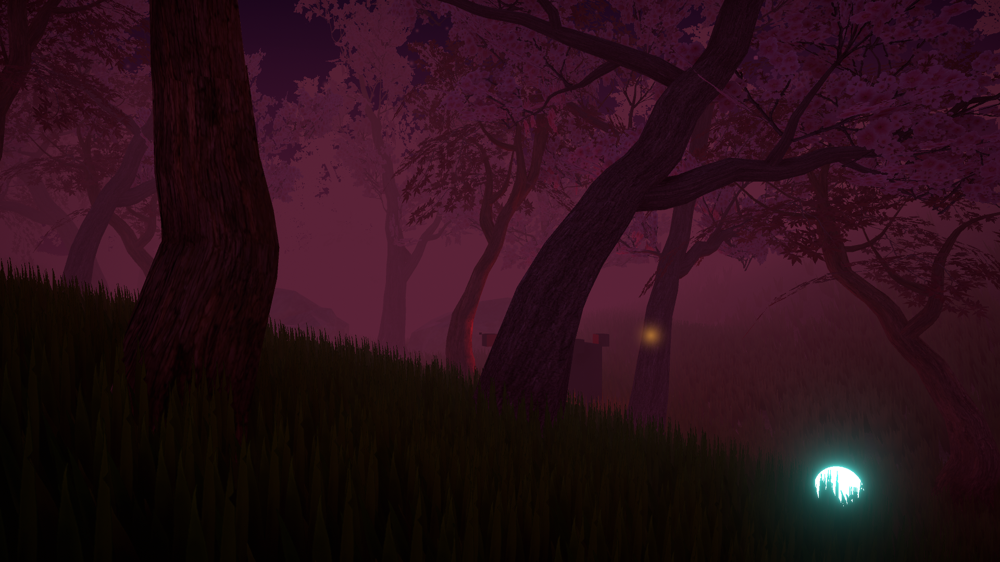
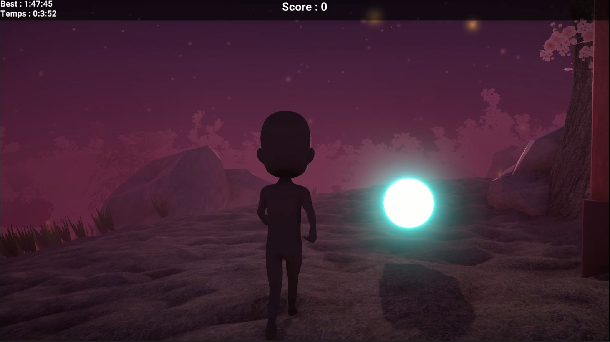

Projet La forêt des âmes
-Thématique transformation
-Thématique transformation
Formation : Licence 3 Arts et Technologies de L'Images 2022-2025
Date : 2022
Durée : 1 mois
Logiciels utilisés : Unity
Support : Jeu PC
Vidéo :
Détails du projet :
C'est un projet réalisé dans le cadre d'un sur l'utilisation du logiciel de programmation en temps réel Unity. Le thème imposé est transformation au sens large.
Le joueur doit faire attentions aux sons pour repérer les âmes à collecter.
"Je n'ai pas de nom.
Lorsqu'une âme à épuisée son temps sur terre, elle doit être guidée vers l'autre monde.
Chaque âme doit traverser la forêt des esprits...
Une épreuve où certaines se perdent et ont besoin d'aide.
Ma mission est de les aider..."
Dossier démo : à découvrir ici !
Images :

